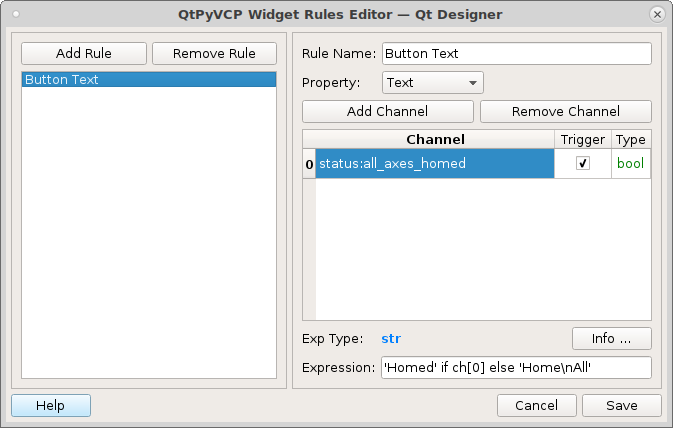
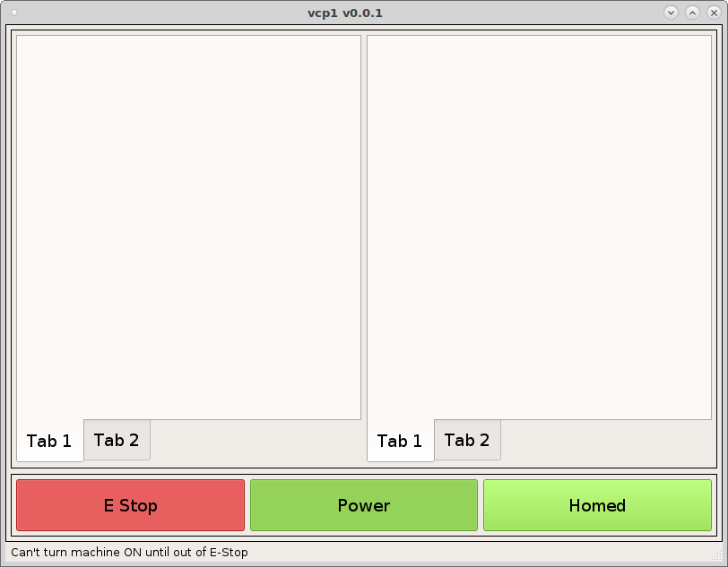
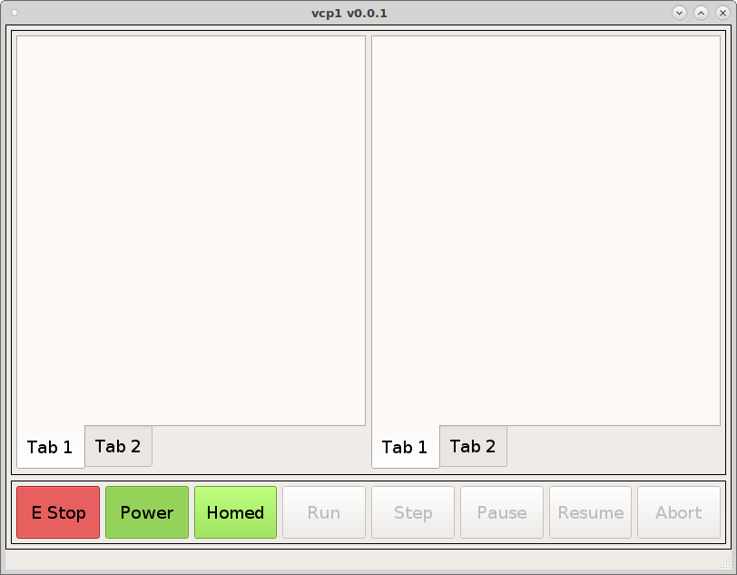

Machine Controls¶
We want all ActionButtons in VCP to have a minimum height and width of 50 pixels and the font size to be 14pt so in the stylesheet for the QMainWindow put the following.
ActionButton {
min-height: 50px;
min-width: 50px;
font: 14pt "DejaVu Sans";
}
{kind=link}
Now add three action buttons in the bottom frame and from left to right add the following to the actionName of each button.
machine.estop.toggle
machine.power.toggle
machine.home.all
Name the left button E Stop and the middle button Power. The Home All button will get its name from the rule.
Make sure you check off the checkable box for E Stop and Power buttons, this makes them a toggle button.
Now we need to add a couple of rules to the Home button. The first rule will set the text of the button based on if all the joints are homed or not. Double click on the button to open the Rules Editor and add a new rule. The Property is Text. Click in the blue channel box and type s now pick status:all_axes_homed from the list. Notice the type is bool which is a true false type and that is what we want for this.
status:all_axes_homed
The expression to change the text of the button is:
'Homed' if ch[0] else 'Home\nAll'
Notice that ‘Home\nAll’ has a new line character \n in it.
{kind=link}
The second rule will have the same channel but the property will be for the Style Sheet with the following expression:
'background-color:rgb(138, 226, 52)' if ch[0]else ''
{kind=link}
Now when we run the VCP you can see the buttons in action.
{kind=link}
To see the styles for machine.estop and machine.power buttons look in vcp1/vcp1/ui/style.css and you can see the how the styles are applied using the style.qss file. For example the style for the E Stop button is applied with the following. Notice that the type of widget is an `ActionButton and the specfic button has the actionName machine.estop.toggle. and the state is checked.
ActionButton[actionName="machine.estop.toggle"]:checked{
background: rgb(239, 41, 41);
}
Now lets add the rest of the machine buttons so add five more ActionButtons to the right of the Home button and name them Run, Step, Pause, Resume, and Abort.
The actionNames are:
program.run
program.step
program.pause
program.resume
program.abort
Now we have the machine buttons complete.
{kind=link}
The program buttons will not be enabled until we load a program.